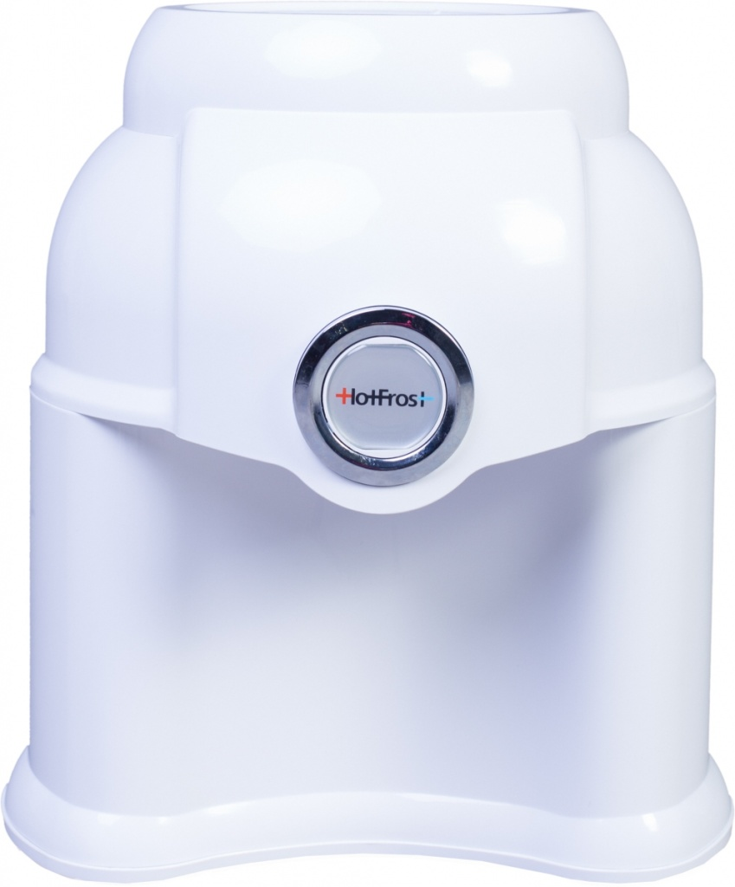
Диспенсер для води HotFrost D1150R
Настільний диспенсер, не охолоджує і не нагріває воду.
- Тип встановлення
- настільний
- Габарити Д*Ш*В
- 350*350*385 мм
- Вага
- 1,65 кг
- Колір
- білий
Ціна902 грн
Подзвонити
Настільний диспенсер, не охолоджує і не нагріває воду.
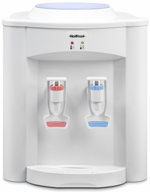
Може подавати окріп для приготування чаю або кави, а також воду кімнатної температури для пиття. Вирізняється невеликими розмірами та невисокою ціною.

Кулер з функцією нагрівання води.

Кулер HotFrost D120E невеликих розмірів з функціями нагрівання та охолодження води.
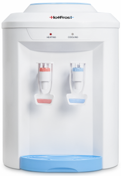
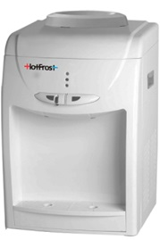
Настільний кулер HotFrost D 113 виконаний у звичному для іншої побутової техніки кольорі - білому. Підвищене виробництво холодної води в цієї моделі кулера забезпечується компресорним охолодженням. Нагрівальний елемент бачка гарячої води не контактує з водою (зовнішній), що виключає відкладення на ньому солей (накипу) та вихід кулера з ладу з цієї причини.
Кнопка подачі гарячої води з функцією захисту від дітей, що запобігає випадковому зливу гарячої води дитиною.
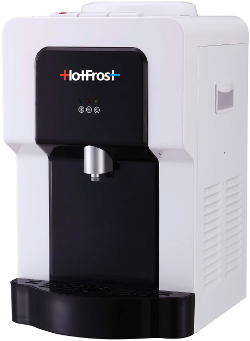
HotFrost D910S - настільна версія кулера V910CS. Ставши меншим за розмірами, цей апарат зберіг продуктивність своєї підлогової версії. Так само, як і V910CS, цей кулер має лише один кран, який може розливати гарячу й холодну воду, а також воду кімнатної температури. Кнопка гарячої води має захист від випадкового спрацьовування.
HotFrost V220CR - не стільки кулер (охолоджувач), скільки диспенсер (роздавач) води. Ця модель спроєктована спеціально для встановлення у школах, дитсадках, спортивних гуртках, спортзалах та інших громадських місцях. Цей апарат не нагріває і не охолоджує воду, а отже користувач не може обпектися або захворіти на ангіну від вживання холодної води, що вкрай важливо, якщо ним користуватимуться діти. Тип кранів - натискання рукою, кнопки зручні та надійні. Два краники дають змогу наливати собі воду з диспенсера двом користувачам одночасно.
У нижню частину диспенсера вбудовано шафку об’ємом 14 л.
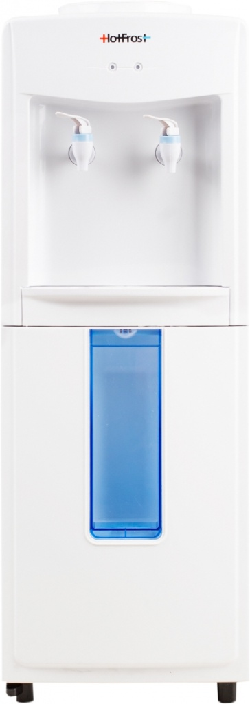
HotFrost V118R - радше диспенсер (роздавач) води з вбудованою шухлядою для одноразових стаканчиків. Цю модель спроектовано спеціально для встановлення у школах, дитсадках, спортивних гуртках, спортзалах та інших громадських місцях. Цей апарат не нагріває і не охолоджує воду, а отже користувач не може обпектися або захворіти на ангіну від вживання холодної води, що вкрай важливо, якщо ним користуватимуться діти. Тип кранів - натиск рукою, кнопки зручні й надійні. Два краники дають змогу наливати собі воду з диспенсера двом користувачам одночасно.
HotFrost V220CF - бюджетний підлоговий кулер з функцією нагрівання води. Тип кранів - натискання рукою, що вирізняється більшою надійністю, ніж звичайні крани типу "натискання кухлем".Є світлодіодний індикатор нагрівання води.
У нижню частину диспенсера вбудовано шафку об’ємом 14 л.

HotFrost V118F - версія лінійки кулерів V118 без функції охолодження. Цей кулер пропонує найкраще співвідношення ціни та якості серед подібних апаратів. У корпус вбудовано стаканотримач.
HotFrost V118E - невеликий і недорогий підлоговий кулер з електронним типом охолодження. Цей кулер пропонує найкраще співвідношення ціни та якості серед подібних апаратів. У корпус вбудовано стаканотримач.

Простий, але елегантний кулер. Вирізняється підвищеною швидкістю нагрівання води (6 літрів за годину). У нижній частині корпусу вбудовано шафку об’ємом 15 літрів.
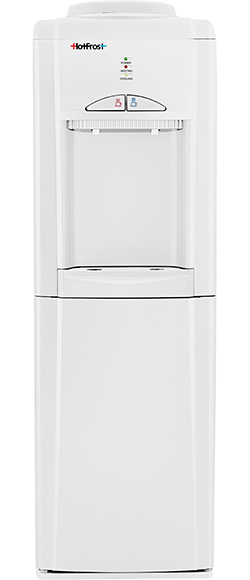
Кулер для бутильованої води з електронним охолодженням. Ця модель має такі переваги:
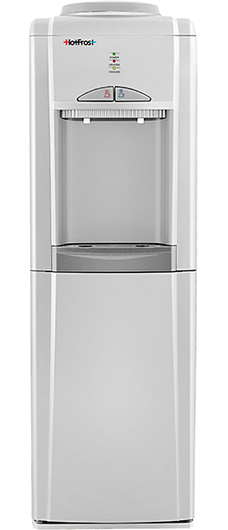
Кулер підлоговий HotFrost V802 CES для бутильованої води з електронним охолодженням.
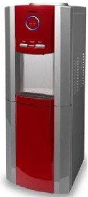
Підлоговий кулер для води HotFrost V730CES з елементами червоного та синього кольору покликаний допомогти покупцеві у виборі кулера для приміщення з інтер’єром у сміливих кольорових гамах.
Простий, але елегантний кулер. Вирізняється підвищеною швидкістю нагрівання води (6 літрів за годину).
Якщо ви шукаєте недороге, але вигідне рішення для охолодження та нагрівання води, зверніть увагу на модель HotFrost V118. Цей кулер пропонує найкраще співвідношення ціни та якості. У корпус вбудовано стаканотримач.
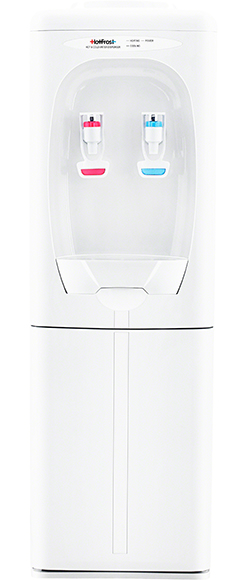
Кулер підлоговий HotFrost V 230 C для бутильованої води з компресорним охолодженням і шафкою.
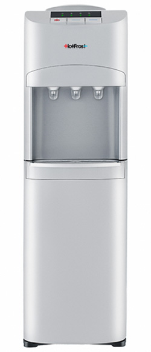
HotFrost V 127 S - естетично красивий кулер зі строгими, приємними для ока обрисами. Підходить як для житлових приміщень, так і для офісів. Має три окремі крани для холодної, гарячої та прохолодної води, а також три великі (для зручності користування) кнопки подачі води.
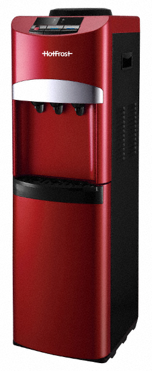
HotFrost V 127 Red - естетично красивий кулер зі строгими, приємними для ока обрисами. Підходить як для житлових приміщень, так і для офісів. Має три окремі крани для холодної, гарячої та прохолодної води, а також три великі (для зручності користування) кнопки подачі води.
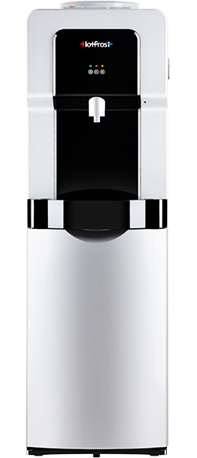
Кулер підлоговий HotFrost V900 CS вирізняється незвичайним дизайном - замість звичних двох або трьох кранів він обладнаний лише одним. Проте цей кран може розливати гарячу й холодну воду, а також воду кімнатної температури. Подача води регулюється кнопками вгорі апарата. Кнопка гарячої води має захист від випадкового спрацьовування.
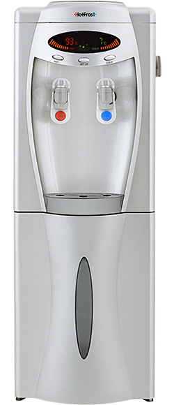
Кулер підлогового типу з компресорним охолодженням, шафою-озонатором та електронною панеллю.
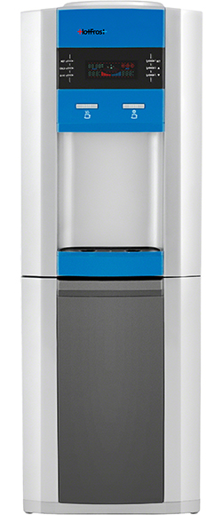
Кулер HotFrost V745CST впишеться в інтер’єр будь-якого сучасного офісу та додасть йому солідності .
Важливим елементом кулера є електронна панель керування з дисплеєм, за допомогою яких можна встановити потрібний температурний режим. Блакитне неонове підсвічування кранів і зони розміщення чашки дає змогу використовувати кулер у затемнених приміщеннях (або в неосвітлених приміщеннях уночі). До корисних функцій цього апарата також належить можливість встановлювати енергоощадні режими роботи кулера, а також температуру нагрівання / охолодження води.
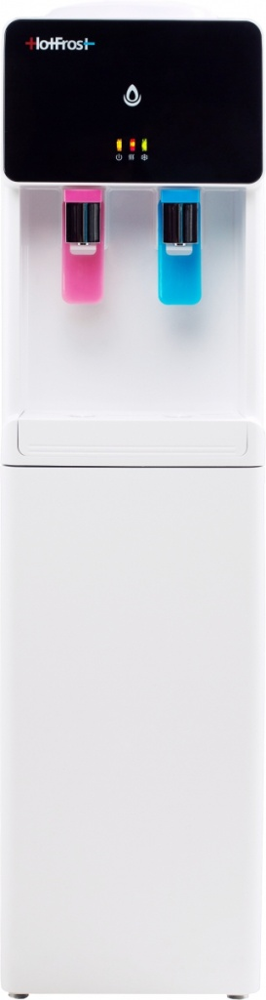
Кулер HotFrost V745CST вирізняється з-поміж інших витонченим дизайном і вишуканою формою, а також панеллю зі світлодіодними індикаторами, які показують стан води в баках. Також він має нагрівальний елемент підвищеної потужності.
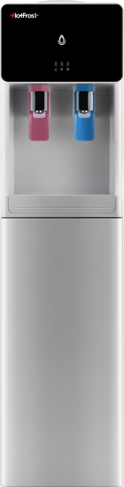
Кулер HotFrost V745CST вирізняється з-поміж інших витонченим дизайном і вишуканою формою, а також панеллю зі світлодіодними індикаторами, які показують стан води в баках. Також він має нагрівальний елемент підвищеної потужності.
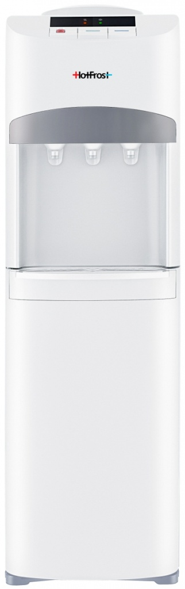
Цей підлоговий кулер оснащений системою охолодження компресорного типу та холодильною шафою на 25 літрів. Він дає змогу ефективно задовольнити потреби офісу (дому) як у холодній воді, так і в необхідності зберігання продуктів, що швидко псуються. Подача здійснюється за допомогою трьох кнопок для холодної, гарячої та прохолодної (приблизно 12°С) води. На кнопці гарячої води є запобіжник від випадкового натискання.

HotFrost V900 BS - це класичний кулер 900-ї лінійки, але з вбудованим холодильником на 14 літрів. Як і всі 900-ті, кулер виготовлено з першокласних матеріалів, а збірка вирізняється підвищеною якістю.
Кулер має один кран, придатний для розливу гарячої, холодної та прохолодної води. Кнопка подачі гарячої води захищена від випадкового спрацьовування.
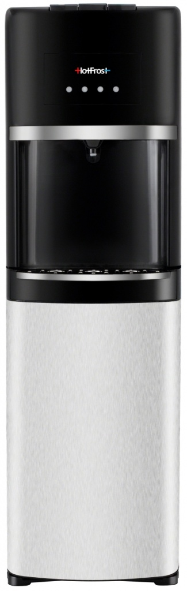
HotFrost 45AEN - недорогий кулер з нижнім встановленням бутля. Вбудований нагрівальний елемент має підвищену потужність і може нагрівати до шести літрів води на годину. На кнопці зливу гарячої води є блокування «захист від дітей», що запобігає зливу «окропу» через необережність.
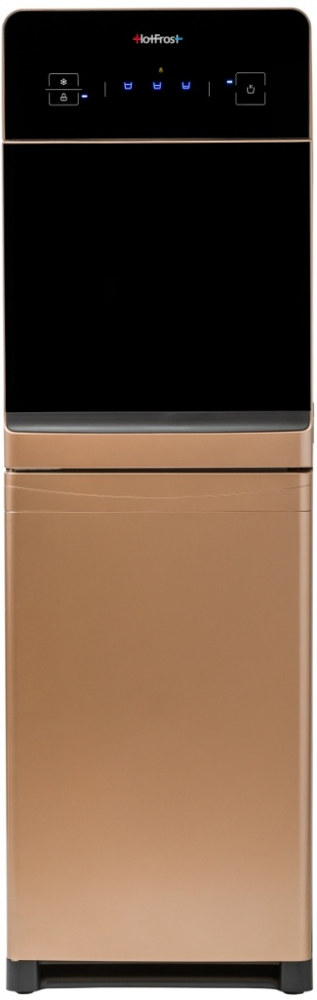
Один із найкрасивіших кулерів від компанії HotFrost, цей апарат поєднує в собі кольори шампань-перламутр і чорний. У верхню частину корпусу вбудовано електронну панель, за допомогою якої можна керувати кулером. Зона подачі води прикрита дверцятами. Бутель розташований у шафці в нижній частині корпусу. У комплект входить маленький літровий чайник. Цей кулер оснащений потужною системою нагрівання води, яка може нагрівати до восьми літрів на годину.
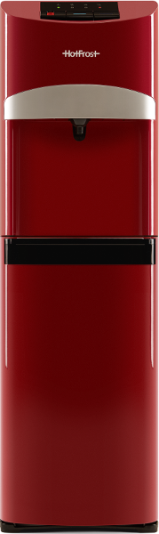
Кулер для води HotFrost 45A Red виконаний у яскравому червоному кольорі. Цей кулер має нижнє завантаження бутля - контейнер з водою схований у нижньому відділенні апарата. Таке розташування бутля не лише не псує зовнішній вигляд приміщення, а й значно полегшує його заміну.
Кулер має лише один кран, який, проте, може подавати як гарячу, так і холодну воду. Також є кнопка подачі злегка охолодженої (~ 15 °С) води - дуже зручна функція, особливо під час спекотного літа. Прохолодна вода втамує спрагу і, водночас, не зашкодить організму.
Серед додаткових зручностей - кнопка подачі гарячої води захищена від випадкового натискання, а зона краника та підставки для склянки підсвічується (хоча підсвічування можна, за бажанням, вимкнути).
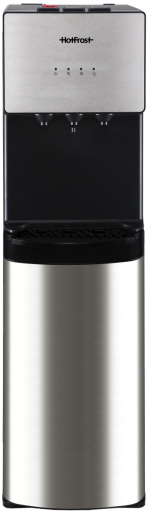
HotFrost 400AS - кулер для води з нижнім завантаженням бутля та компресорним охолодженням. Стильне колірне рішення - чорний і металік - доповнюється неоновим підсвічуванням кранів. Є кнопка захисту від випадкового натискання крана гарячої води, кнопка ввімкнення/вимкнення нагрівання та охолодження, індикатор наповнення краплезбірника. Охолоджувальний компресор і нагрівальний елемент мають підвищену продуктивність.
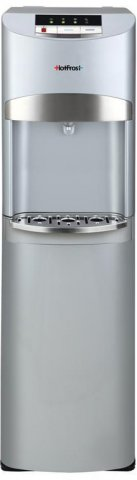
Кулер для води HotFrost 45AS з компресорним охолодженням. Такий кулер впишеться в будь-який інтер'єр і додасть йому яскравості та оригінальності. У цій моделі використовується прогресивний механізм нижнього завантаження бутля. Водночас ціна залишилася на рівні кулерів з верхнім завантаженням. Кулер має електронний екран і захист від випадкового натискання крана гарячої води.
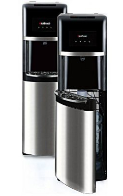
Кулер для води HotFrost 35AN з компресорним охолодженням. Характерна особливість - чорне лакове покриття. У цій моделі використовується прогресивний механізм нижнього завантаження бутля. Водночас Ціна залишилася на рівні кулерів з верхнім завантаженням. Кулер має електронний екран, дисплей і захист від випадкового натискання крана гарячої води.
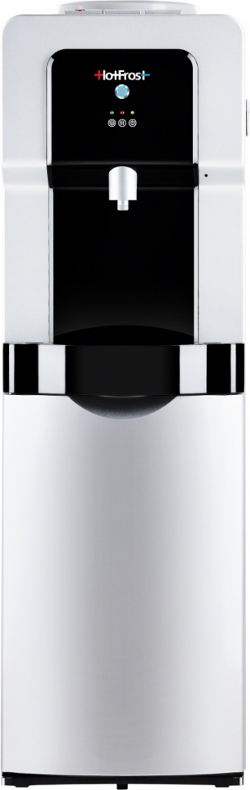
HotFrost V900CSG - кулер з компресорним охолодженням і можливістю газування води. Від інших кулерів відрізняється тихою роботою компресора та підвищеною якістю збірки. На панелі керування є три кнопки - для подачі гарячої, холодної прохолодної (15°С) води. На кнопці подачі гарячої води є захист від випадкового натискання.
Ми продаємо та здаємо в оренду кулери, фільтри й пурифаєри, самі їх встановлюємо, чистимо та ремонтуємо. У нас власна майстерня, штатні майстри та склад запчастин, тому ми не залежимо від підрядників.
Ремонтуємо у власній майстерні. Запчастини на ходові моделі є в наявності, чекати поставку не потрібно.
Штатні спеціалісти з багаторічним досвідом. Вони знають усе обладнання, яке ми продаємо та здаємо в оренду.
Підлогові та настільні кулери, пурифаєри, системи зворотного осмосу, промислові фільтри будь-яких брендів.
Підбір, купівля або оренда, доставка, встановлення, обслуговування та ремонт. Усе в одній компанії, за одним телефоном.
і десятки офісів, клінік, шкіл і виробництв Києва, сотні приватних домогосподарств
Розкажіть, що сталося з кулером, фільтром або пурифаєром. Домовимося про виїзд або доставку в майстерню.
Чат у ViberНаведіть камеру телефону, відкриється чат з нами
Чат у TelegramНаведіть камеру телефону, відкриється чат з нами